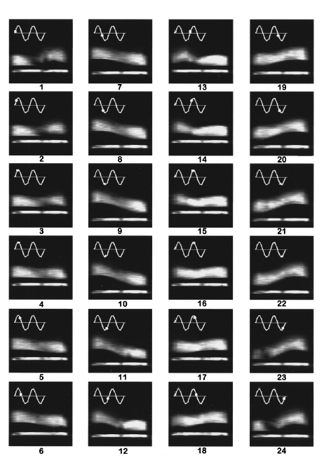

|

Of all the common
motions of assemblies of granular particles, the most difficult to measure is the vibrating bed because
of the unsteady motion. Researchers at New Mexico Resonance have demonstrated an MRI method to
study highly energetic vibrating granular beds by spatial scanning. In contrast to Fourier imaging,
spatial scanning prevents scattering of image intensities caused by unsteady motion.
Two-dimensional images of a vibrating bed undergoing period doubling were obtained and a band of
high shear was identified by reduced image intensity. It can clearly be seen as it travels back and forth across the bed with
each cycle of up and down motion of the bed (above).
Caprihan, A., Fukushima, E., Rosato, A.D., Kos, M.
Magnetic resonance imaging of vibrating granular beds by spatial scanning
(1997) Review of Scientific Instruments, 68 (11), pp. 4217-4220.
|